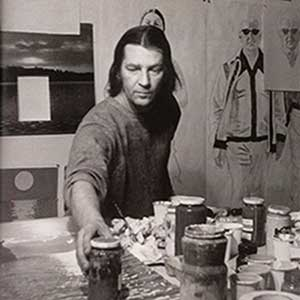
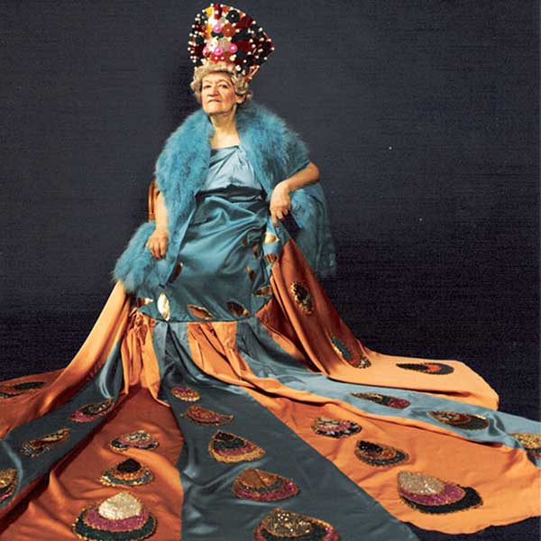
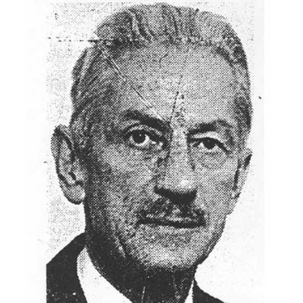
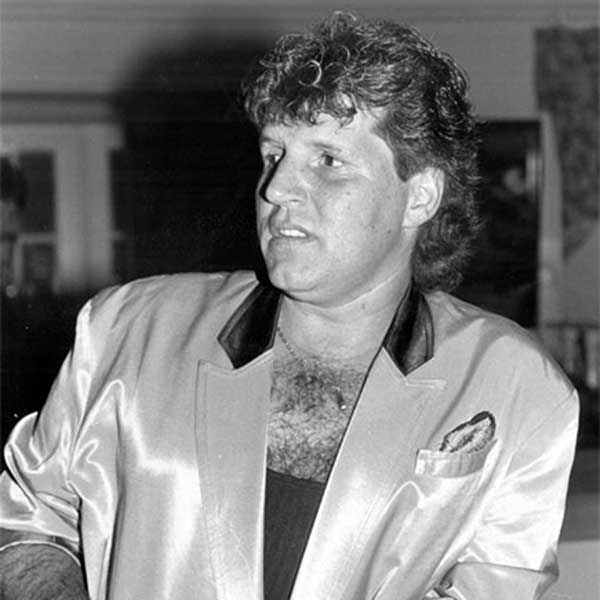
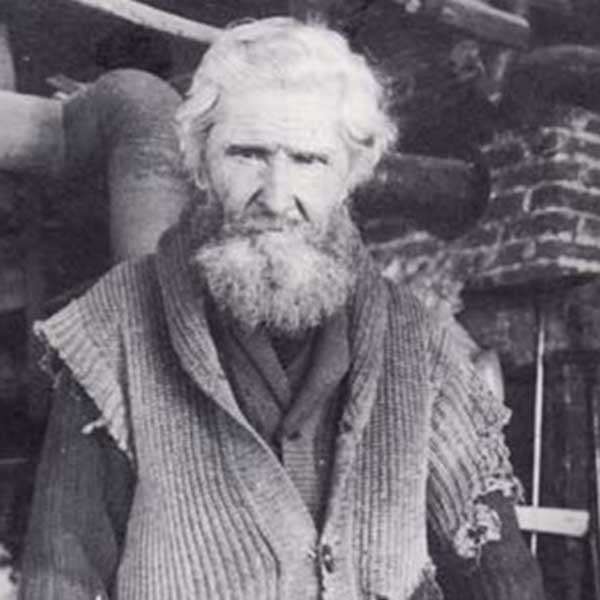

Allez au contenu
Mystère sur Québec
Accueil
Carte
Enquête
Contact
Carte
Galerie de portraits

Edmund Alleyn
Philippe-Joseph Aubert de Gaspé

Henriette Belley

Robert Blatter
Joseph Knight Boswell
Marthe Caillaud Simard

Johnny Farago
Camille Henry

Louis Jobin
Sigismund Mohr
Alfred Pellan
Maurice Pollack